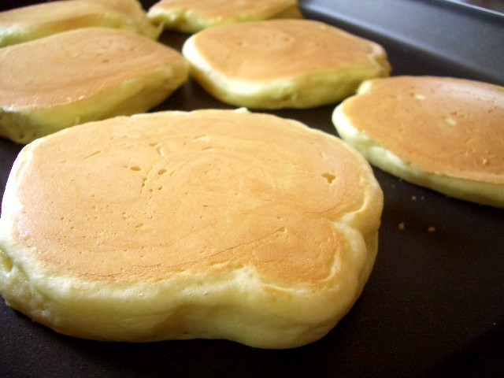

Easy pancake recipe for you to enjoy! Make sure to top the pancakes with maple syrup or fresh fruit!
Combine the fluor, sugar, baking poweder and salt in a large bowl; make a well in the center. Pour milk, oil and egg; mix until smooth.
Heat a lightly oiled griddle. Pour a scoop about 1/4 cup batter per pancake onto the griddle. Cook until bubbles form and the edges are dry. Flip and cook until browned on the other side. Repeat with remaining batter
Serve hot and enjoy some delicious pancakes!